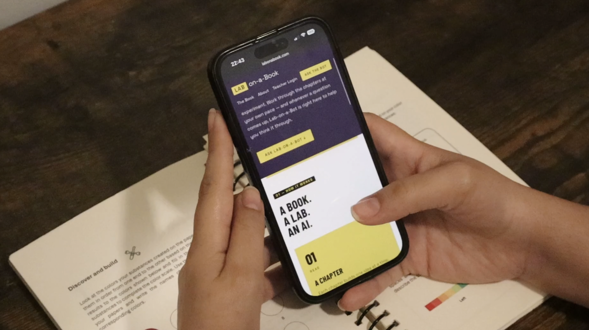

.png)
Lab-on-a-Book
A low-cost, AI-powered, paper-based science platform that helps science learning cross spaces.
VIEW PROJECT →Learning Scientist
I'm a Doctoral Student of Education at Columbia University. I study how the design, interfaces, and algorithmic architectures of diverse environments and tools — spanning physical toolkits, AI, and social networks — shape how the public participates in scientific practices. My work draws on critical pedagogy, constructionism, and sociotechnical perspectives on learning and technology.
I'm also the inventor of Lab-on-a-Book , a low-cost, AI-powered, paper-based science platform that helps science learning cross spaces.
A low-cost, AI-powered, paper-based science platform that helps science learning cross spaces.
VIEW PROJECT →
Studying how learners question, test, and make sense of generative AI during scientific inquiry.
VIEW PROJECT →
Collaborative work connecting Freirean pedagogy, public dialogue, and educational practice across communities and media.
VIEW PROJECT →